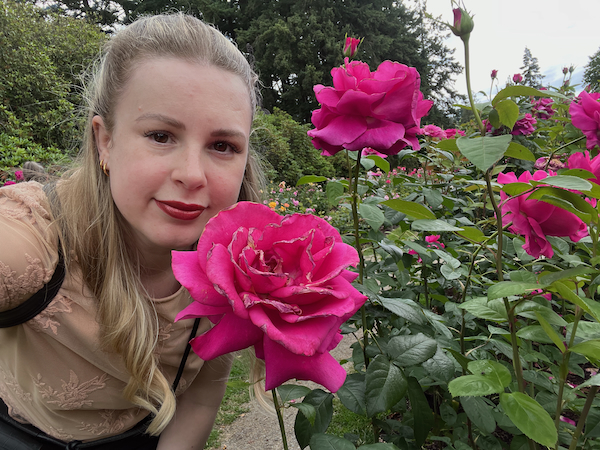

About Me:
I'm taking CS 121 for my love of technology and coding! My major is Computer Science, and I have over 6 years experience in tech previous to coming back to school.
My website is sort of inspired by websites I saw/made in the early 2000s. I really love the cheesy kind of fairy and fantasy aesthetic that was around then. The narrow blog sizes and tiny text were really popular on things like LiveJournal, Xanga, Myspace when I was using them.
Three Things I Love:
- Star Trek, Deep Space 9
- "Neuromancer" by William Gibson
- The Spice Girls
Me at the Portland Rose Test Garden:
Click the photo to visit the Rose Test garden page!~